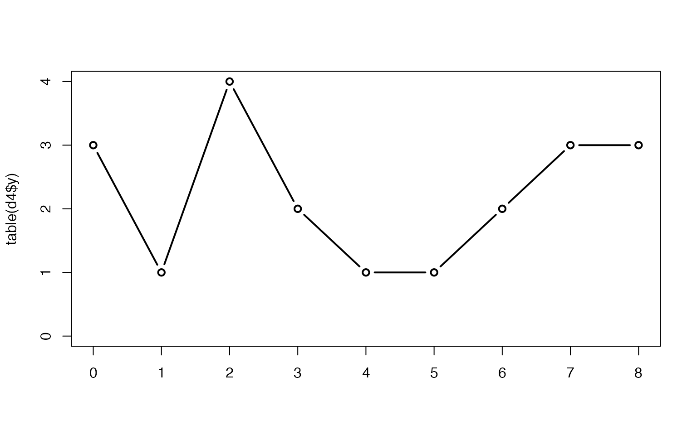

7. 一般化線形混合モデル（GLMM）–個体差のモデリング–
- GLM: 応答変数\(y_i\)を説明変数\(x_i\)と結びつける
- そのための部品が確率分布、リンク関数、線形予測子
- データに合うモデルを作る方法なんだけど、現実のデータに含まれるばらつきは確率分布だけではうまく説明できない
- 現実のデータに含まれるばらつきの例示
- たくさんの植物個体の種子数を調べる
- ある説明変数によって種子数が異なる
- その説明変数が、全個体で同じだとすると→\(\lambda\)が同じ値になるから、どの個体の種子数も同じ分布に従うはず
- でも、現実にはそうはならないよね、という話
- 個体差
- 観測できない個体差というものが必ずある
- 観測できないけど、「観測しない個体差」としてモデルに組み込むことはできる
- いままでのGLMには、そういう項はなかった
- 一般化線形混合モデル（generalized linea mixed model; GLMM）
- データのばらつきを二項分布とかポアソン分布で
- 個体差を正規分布で
- 部品として使う確率分布が複数になる
- ちなみに
- これ以降に出てくる場所差・個体差は説明変数にはなり得ないもののことなので注意＝制御できないし観測できない
- たくさんの植物個体の種子数を調べる
7.1 例題：GLMでは説明できないカウントデータ
- 基本情報
- 植物の各個体から8個の種子、そのうち生きてる数＝有限個数の2値データ＝二項分布
- 葉っぱの数によって生存数がどう変わるか
- 個体\(i\)の種子が8個全部生きてたら\(y_i=8\), 全部死んでたら\(y_i=0\)
- 葉数\(x_i\)、\(x_i\)の範囲が2–6で100個体集める
- GLMなら…
- 114ページの表で二項分布のリンク関数を確認する→ロジット関数
- \(logit(q_i)=\beta_1+\beta_2x_i\)
- 本にある \(p(y_i|\beta_1, \beta_2)= { 8 \choose y_i }q^{y_i}_i(1-q_i)^{8-y_i}\) は二項分布の確率分布関数→118ページ
- GLMがやるのは最尤推定（→25ページあたり）
- 尤度(=全ての\(i\)についての確率の積）を最大にするパラメータの推定
- なので、全ての\(i\)について\(p(y_i|\beta_1, \beta_2)\)をかけるんだけど、それは扱いにくいので\(log\)に入れて計算する（→\(\Sigma\)log\(p(y_i|\beta_1, \beta_2)\); \(log\)に入れたことで掛け算が足し算になってる）
- まあ、実際の計算はRのglm()に任せる
- ロジット関数のパラメータ\(q_i\)(2値のうち1方となる確率)は?
- やってみる
dat<-read.csv('./kubobook_2012-2/glmm/data.csv')
glm(cbind(y, N-y) ~ x, data=dat, family=binomial)##
## Call: glm(formula = cbind(y, N - y) ~ x, family = binomial, data = dat)
##
## Coefficients:
## (Intercept) x
## -2.1487 0.5104
##
## Degrees of Freedom: 99 Total (i.e. Null); 98 Residual
## Null Deviance: 607.4
## Residual Deviance: 513.8 AIC: 649.6- 切片\(\hat{\beta_1}=-2.15\), \(x_i\)の傾き\(\hat{\beta_2}=0.51\) (ハットは推定値であることを示すために使っている記号→27ページ脚注)
- 図の説明
- 図7.2: 葉数\(x_i\)の関数としての生存種子数\(y_i\)。データ点数が生存数。
- 図7.3
- 左: 図7.2に最尤推定結果（実線）と真のパラメータからの推定結果（破線）のプロット。合ってないことが分かる。
- 右: 合ってないことの再確認。最尤推定されたモデルからの種子数予測（黒丸）と実データ（白丸）。合わない。
7.2 過分散と個体差
- 7.1は二項分布で説明できそうな状況なのに合わない。どうやら推定値が誤っている誤っている。
- 二項分布で期待(されるとりも大きな分散が含まれているデータ＝過分散(overdispersion)
7.2.1 過分散：ばらつきが大きすぎる
- 図7.3右の\(x_i=4\)における予測値とデータのずれについてRで調べてみる
- 図示して、平均と分散を求める
d<-read.csv('./kubobook_2012-2/glmm/data.csv')
d4<-d[d$x==4,]
plot(table(d4$y),type='b')
c(mean(d4$y), var(d4$y))## [1] 4.050000 8.365789- 二項分布において\(y_i\)の期待値は\(np\), 分散は\(np(1-p)\)
- 今の例で\(x_i=4\)のとき、生存確率\(p\)は\(4.05/8\)で0.5くらい
- 分散は\(8 \times 0.5 \times (1-0.5)\)で2くらいとなるはず。二項分布ならば。
- 実際に計算した分散は0.84なので明らかに分散が大きい
- 二項分布だと説明できないじゃん
7.2.2 観測されていない個体差がもたらす過分散
- 過分散になってしまう原因は1つには限らない
- けど、よくあるのが観測されていない個体差（個人差）
- 図7.4: 極端な例。全生存と全非生存が半数ずつで平均4、分散（\(\frac{n\Sigma(x_i-\bar{x})}{n}\)）16。二項分布で期待される分散2よりかなり大きい。
- 「全個体は均質」という仮定で二項分布に従うなどと考えると失敗するよ、という話
- けど、よくあるのが観測されていない個体差（個人差）
7.2.3 観測されていない個体差とは何か?
- 個体差：データとしては定量化も識別もされていないけれど、各個体の何かに起因しているように見える差
- 今回の例でいうなら可能性あることは2種類
- 生物的要因（遺伝子、経験）
- 非生物的要因（栄養塩類量、水分や光などの環境）
- ほかにもあり得る。1鉢につき1植物だとすると、鉢の置き場所、土の状態などなど。ここではこれらの非生物要因を場所差・ブロック差と呼ぶ。
- 鉢の効果をデータから推定できる?
- 1鉢に1植物の場合、鉢と植物個体は交絡してるので区別はできない。まとめたものが個体差。
- いずれにしろ、影響する要因全てを特定するのは不可能。個体差や場所差があるという前提で統計モデルを考える必要。
7.3 一般化線形混合モデル
- 一般化線形混合モデル（generalized linear mixed model）
- 個体差や場所の効果をGLMに組み込むためのモデル
7.3.1 個体差をあらわずパラメータの追加
- ある個体\(i\)の生存確率\(q_i\)の式に個体差をあらわすパラメータ\(r_i\)を追加
- \(logit(q_i)=\beta_i+\beta_2x_1+r_i\)
- \(r_i\)は\(-\infty\)から\(\infty\)をとる連続値
- 図7.5: \(r_i\)の影響。正の値だと生存確率は大きく、負の値だと小さくなる
- \(logit(q_i)=\beta_i+\beta_2x_1+r_i\)
7.3.2 個体差のばらつきを表す確率分布
- GLMMでは\(r_i\)は何か確率分布に従っていると考える
- しかもデータに基づいて、そのパラメータを推定できる
- 他のパラメータ（\(\beta_1, \beta_2\)）については確率分布に従うことを考えてるわけではない
- ここでは\(r_i\)は平均0、標準偏差\(s\)の正規分布に従うと仮定（ただし、正規分布とする根拠はない。観測してないから分からない。便利だから正規分布にするだけ）
- さらに各\(r_i\)は独立と考える。これも単純化のため、なので便利になるように。
- これらの前提でいくと、\(r_i\)の確率分布は以下のようにあらわせる
- \(p(r_i|s)=\frac{1}{\sqrt(2\pi
s^2)}exp(-\frac{r_i^2}{2s^2})\)
- 正規分布の確率分布関数そのまま。平均0と仮定しているので平均の項が消えてる（→135ページ）
- 標準偏差\(s\)は\(r_i\)のばらつきに影響するので、\(s\)によって集団の質が変わり、過分散の程度が変わることになる
- \(p(r_i|s)=\frac{1}{\sqrt(2\pi
s^2)}exp(-\frac{r_i^2}{2s^2})\)
- ここで図7.6の説明
- 一番上の図：標準偏差\(s\)によって分布の広がりが変わる。これはOK。
- (A): \(s\)が小さいと\(r_i\)の分布は狭く、(B)\(s_i\)が大きいと\(r_i\)は広い。これもOK。
- このような\(r_i\)（ここでは50個体分）から二項乱数を発生させる
- ここを忘れていそう。→120ページあたり。
- 二項分布のリンク関数はロジット関数（log\(\frac{q_i}{1-q_i}\)）
- この確率\(q_i\)はロジスティック関数（\(q_i=\frac{1}{1+exp(-線形予測子)}\)）で求めることができる
- この図では、線形予測子の中のパラメータ\(\beta_1, \beta_2\)を0とおいてるので、線形予測子は\(r_i\)のみとなり、(A)や(B)のように標準偏差が異なる正規分布から生成した\(r_i\)を使うことになる。
- \(q_i\)が決まると個体数\(y_i\)も決まるので算出し、プロットしたのが一番下の図
- \(s\)が小さいと二項分布に近くなるけど、大きいと全然違う分布になる
7.3.3 線形予測子の構成要素：固定効果とランダム効果
- GLMMの混合（mixed）とは何か
- 線形予測子はいくつかの項（説明変数）から構成される
- それらの構成要素は固定効果（fixed effects）ランダム効果（random effects）に分類
- 2種類の項を持つので、そのようなGLMは混合モデル、混合効果モデルと呼ばれてきた
- リンク関数のないモデル（ばらつきは正規分布）の場合
- 固定効果：全体の平均を変える
- ランダム効果：全体の平均には影響しないけど、ばらつきを変える
- 今回のモデル\(logit(q_i)=\beta_1+\beta_2x_1+r_i\)では\(\beta_1\)、\(\beta_2x1\)は固定効果、\(r_i\)はランダム効果
- \(r_i\)は平均0としているから全体の平均には影響しない
- 平均0じゃなかったら?
- それは切片に入る?
- \(r_i\)は平均0としているから全体の平均には影響しない
7.4 一般化線形混合モデルの最尤推定
- モデルに\(r_i\)が入ってくると最尤推定できない
- 個体差だから個体数分求めなくてはいけない→データ数よりもパラメータ数が大きくなる
- でも他のパラメータは最尤推定したい
- どうする？
- 尤度\(L_i\)を求めるときに\(r_i\)を積分する
- 確率分布は積分すると1になるので\(r_i\)は消える
- ただし、\(p(r_i|s)\)で重みづけ（掛けてる）している
- 図7.8
- \(r_i\)に依存して変化する二項分布のパラメータ\(q_i\),それが確率\(p(r)\)で起きるから重み付ける
- それらを足す
- 出来上がった分布は過分散（平均0, 分散1の正規分布を混ぜてるから）
- で、尤度は全個体分の積（\(L(\beta_1,\beta_2,s)=\prod_iL_i\)
7.4.1 Rを使ってGLMMのパラメーターを推定
- glmmMLパッケージ
- clusterオプションでランダム効果であることを指定
library(glmmML)
glmmML(cbind(y, N-y)~x, data=d, family=binomial, cluster=id)##
## Call: glmmML(formula = cbind(y, N - y) ~ x, family = binomial, data = d, cluster = id)
##
##
## coef se(coef) z Pr(>|z|)
## (Intercept) -4.190 0.8777 -4.774 1.81e-06
## x 1.005 0.2075 4.843 1.28e-06
##
## Scale parameter in mixing distribution: 2.408 gaussian
## Std. Error: 0.2202
##
## LR p-value for H_0: sigma = 0: 2.136e-55
##
## Residual deviance: 269.4 on 97 degrees of freedom AIC: 275.4- 読み方
- coeff: 最尤推定されたパラメーター。真の値-4と1に近い。
- Scale parameter: \(r_i\)のばらつき＝\(s\)の最尤推定値、Std. Errorは標準誤差。ばらつきは過小推定されている。本当は3。
- Residual devianceとAICは本とズレてる。なぜ？
7.5 現実のデータ解析にはGLMMが必要
複数参加者からデータを取る状況だと基本GLMMだよね、という話。
7.5.1 反復・疑似反復と統計モデルの関係
- 個体差・場所差が「見えるか」がポイント
- 反復：1個体1データのような取り方の場合、個体が同じか違うかの区別はない（「違う」しかない）ので、過分散にはならないし、モデルに個体差を入れる必要はない。というか入れられない。
- 疑似反復：1個体から複数のデータを取り、複数個体からデータを取る。この場合、個体内の違いと個体間の違いを区別できる。これが疑似反復。モデルに個体差を入れることができるし、入れるべき。個体は反復（1個体から1データ）、場所は疑似反復（1つの鉢に複数個体）という場合もあり、そのときは場所差をモデルに入れるべき。個体も場所も疑似反復の場合、当然、どちらもモデルに入れる。
7.6 いろいろな分布のGLMM
- ポアソン：過分散の場合、ポアソン分布と正規分布を混ぜる。glmmMLで最尤推定可能。ガンマ分布との無限混合分布である負の二項分布を仮定することもある。
- 正規分布やガンマ分布：過分散は定義できない（平均と分散が独立なので）。ただし、疑似反復にデータを取ってるならGLMMを使うべき。lme4パッケージのglmer関数など。線形混合モデルとも呼ぶ。